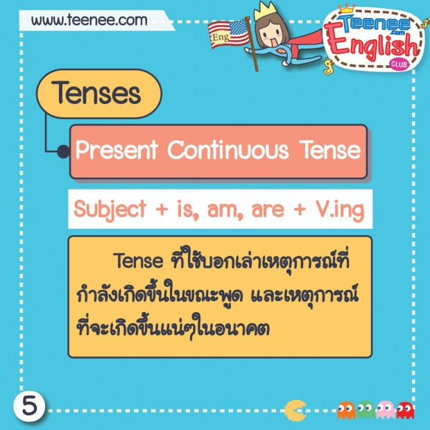

Present Continuous

คือโครงสร้างประโยคที่ใช้อธิบายเหตุการณ์หรือการกระทำที่กำลังเกิดขึ้นและดำเนินอยู่ในขณะที่พูด ตัวอย่าง -[ประโยคบอกเล่า] (Subject + is/am/are + V.ing)I am reading a book. (ฉันกำลังอ่านหนังสือ) He is swimming in the pool. (เขากำลังว่ายน้ำในสระ) -[ประโยคปฏิเสธ ](Subject + is/am/are + not + V.ing)I am not working today. (ฉันไม่ได้ทำงานในวันนี้)She is not sleeping. (เธอยังไม่ได้นอน) - [ประโยคคำถาม] (Is/Am/Are + Subject + V.ing?)Are you listening to me? (คุณกำลังฟังฉันอยู่หรือเปล่า?)Is he eating dinner? (เขากำลังกินอาหารเย็นอยู่ใช่ไหม?)